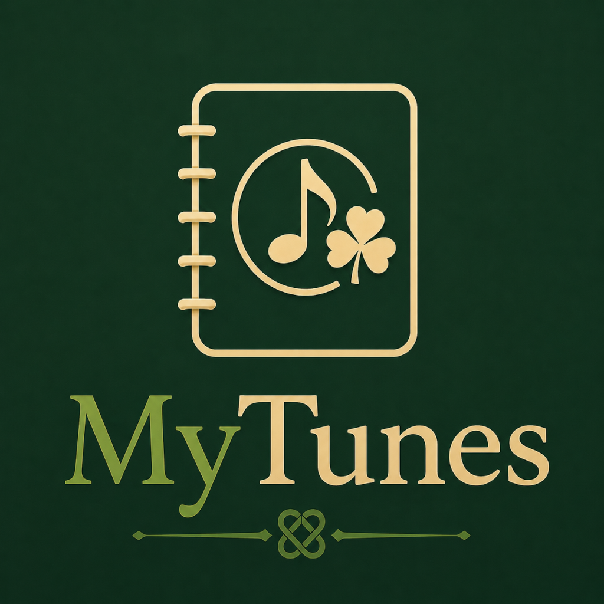
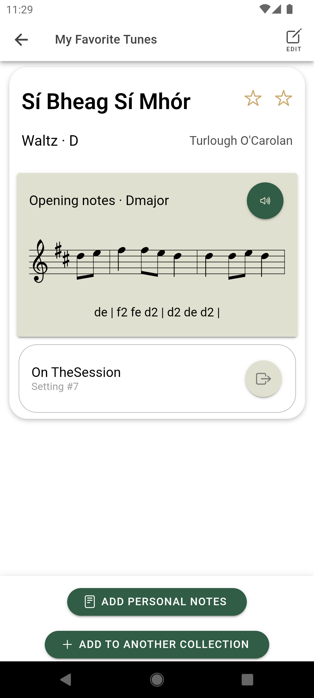

Your Irish & trad music collection,
in your pocket
Organise your tunes into collections and take quizzes to help you learn.
With MyTunes you can:
- Create collections of tunes. For example: To practise, Favourites, Local Session.
- Add tunes and find their reference on TheSession.org.
- Quiz yourself on a collection to help you learn the tunes.
- Share collections of tunes.
- Personalise tune information such as the key or your favourite recording.
- Create sets and set lists.
- Share set lists or export them to PDF.

Tune data sourced from TheSession.org: the world's largest community for Irish traditional music.
Also:
- No ads.
- No account needed.
- You own your data.